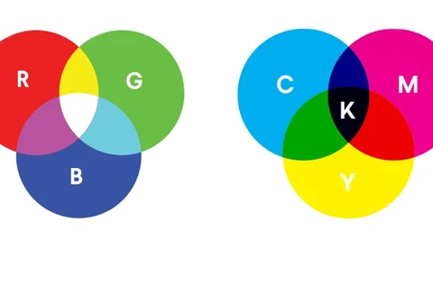

Wat zijn kleurmodellen?
Een kleurmodel gebruikt het mengen van kleuren om andere kleuren te maken. Twee bekende kleurmodellen zijn RGB en CMYK. Je camera bestaat uit een aantal lenzen waarachter een beeldsensor ligt: de CCD.
RGB
De puntjes op je beeldscherm heten pixels. Als je nog verder inzoomt zie je rode, groene en blauwe lampjes: RGB. Iedere pixel bestaat uit drie lampjes. Dit kleurmodel wordt gebruikt bij schermen, zoals telefoons en computers. Door deze drie kleuren te mengen, kunnen veel verschillende kleuren ontstaan. Deze kleuren vormen de basis van alle andere kleuren. Als je beeldscherm uitstaat, is het zwart. De lampjes van de pixels branden dan niet. Door de kleuren aan de zwarte achtergrond toe te voegen, ontstaan er nieuwe kleuren. En als je alle kleuren gebruikt ontstaat er wit. Een computer kan niet werken met procenten, alleen met gehele getallen. Daarom wordt de hoeveelheid rood, groen en blauw aangegeven met een decimaal getal van 0 t/m 255 (een byte).
CMY
Het CMY model is nodig bij het printen, omdat het RGB model niet werkt op wit papier. CMY staat voor cyaan, magenta en geel. Bij het mengen van deze kleuren krijg je geen zwart, maar donkergrijs. Om toch zwart te krijgen met dit kleurenmodel, wordt zwart toegevoegd. Hierdoor ontstaat het kleurenmodel CMYK.
Het belangrijkste verschil is dat RGB vooral voor schermen wordt gebruikt en CMYK voor drukwerk.
Samenvatting van het filmpje
Het filmpje geeft extra uitleg over kleurmodellen. RGB wordt gebruikt voor schermen en werkt met rood, groen en blauw licht. CMYK wordt gebruikt bij printen en werkt met cyaan, magenta, geel en zwart. Zo kunnen kleuren op een scherm en op papier worden weergegeven.
